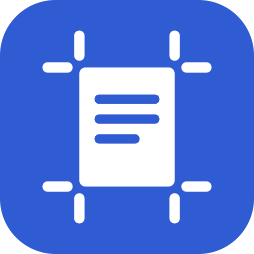

Polityka prywatności
Obowiązuje od 23 listopada 2026 r.
Ta polityka opisuje, jakie dane przetwarza Makietka (makietka.app) – aplikacja do projektowania publikacji do druku – oraz jej łącznik dla asystentów AI (api.makietka.app/mcp).
1. Administrator i kontakt
Administratorem danych jest operator serwisu Makietka. We wszystkich sprawach dotyczących danych osobowych pisz na kontakt@makietka.app.
2. Jakie dane przetwarzamy
- Konto: adres e-mail, nazwa wyświetlana, dane logowania (hasło przechowujemy tylko w postaci skrótu kryptograficznego).
- Twoje projekty: strony, teksty, tabele danych, obrazy i czcionki, które dodajesz, komentarze oraz lista osób, którym udostępniasz projekt. Przez 14 dni przechowujemy kopie awaryjne poprzednich wersji projektu, żeby dało się cofnąć niechciane zmiany.
- Klucze dostępu dla AI: przechowujemy tylko skrót klucza, jego opis, zakres (projekty, uprawnienia) i termin ważności.
- Klucze do usług AI (np. Google Gemini), które wpisujesz w ustawieniach: są szyfrowane w Twojej przeglądarce hasłem, które znasz tylko Ty. Na serwer trafia wyłącznie szyfrogram – nie możemy go odczytać.
- Linki do podglądu: obrazy stron, które udostępniasz linkiem, oraz ustawienia linku (hasło w postaci skrótu, data ważności).
- Pliki zlecone przez AI (PDF, PNG) – przechowywane 7 dni.
- Wiadomości, które wysyłasz formularzem kontaktowym albo e-mailem.
- Dane techniczne: adres IP i informacje o przeglądarce w dziennikach serwerów (bezpieczeństwo, ochrona przed nadużyciami).
Nie używamy narzędzi analitycznych, reklam ani profilowania. Nie sprzedajemy danych.
3. Po co i na jakiej podstawie
- Prowadzenie konta i działanie aplikacji, w tym łącznika AI i współpracy przy projektach – wykonanie umowy (art. 6 ust. 1 lit. b RODO).
- Bezpieczeństwo, zapobieganie nadużyciom, kopie awaryjne – prawnie uzasadniony interes (art. 6 ust. 1 lit. f RODO).
- Odpowiedzi na wiadomości – prawnie uzasadniony interes albo działania na Twoje żądanie.
4. Łącznik dla asystentów AI
Łącznik pozwala aplikacji AI (np. Claude, ChatGPT) czytać i zmieniać Twoje projekty. Działa tylko po Twojej zgodzie: logujesz się w Makietce i wybierasz, które projekty AI zobaczy, czy może je zmieniać i na jak długo. Aplikacja AI nie dostaje Twojego hasła, a dostęp odbierasz w każdej chwili w ustawieniach konta → Sztuczna inteligencja.
Dane projektów, które AI odczyta, trafiają do dostawcy tej aplikacji AI i są przetwarzane według jego polityki prywatności. Makietka nie widzi Twoich rozmów z AI – widzi tylko wywołania narzędzi łącznika (np. „zmień element na stronie 3”), które zapisuje jako zmiany w projekcie.
Gdy AI zleca obraz z opisu, rysuje go Twoja przeglądarka Twoim kluczem do usługi AI – opis obrazu trafia wtedy bezpośrednio do wybranego dostawcy (np. Google). Link do podglądu AI tworzy tylko po Twojej zgodzie.
5. Komu przekazujemy dane
| Podmiot | W jakim celu |
|---|---|
| Supabase | baza danych, konta i logowanie |
| Cloudflare | hosting aplikacji, przechowywanie plików, ochrona przed botami, rysowanie plików na serwerze |
| Brevo, ZeptoMail | wysyłka e-maili (potwierdzenia, zaproszenia, powiadomienia) |
| Dostawcy AI wybrani przez Ciebie (np. Google Gemini, OpenAI, Anthropic, OpenRouter) | tylko gdy sam korzystasz z funkcji AI swoim kluczem – połączenie idzie bezpośrednio z Twojej przeglądarki |
Część tych podmiotów może przetwarzać dane poza Europejskim Obszarem Gospodarczym – wtedy na podstawie standardowych klauzul umownych Komisji Europejskiej albo innych zabezpieczeń przewidzianych w RODO.
6. Jak długo
Dane konta i projektów – do usunięcia konta (Ustawienia konta → Usuń konto i dane) albo projektu. Kopie awaryjne – 14 dni. Pliki zlecone przez AI – 7 dni. Dzienniki serwerów – zgodnie z ustawieniami dostawców, zwykle do kilku tygodni.
7. Pamięć przeglądarki
Aplikacja zapisuje w Twojej przeglądarce (localStorage, IndexedDB, pamięć podręczna) projekty do pracy bez sieci, ustawienia i dane logowania. Nie używamy plików cookie do śledzenia ani reklam.
8. Twoje prawa
Masz prawo dostępu do danych, ich sprostowania, usunięcia, ograniczenia przetwarzania, przenoszenia (projekt zapiszesz jako plik .makietka) oraz sprzeciwu. Napisz na kontakt@makietka.app. Masz też prawo wnieść skargę do Prezesa Urzędu Ochrony Danych Osobowych.
9. Zmiany
O istotnych zmianach tej polityki poinformujemy w aplikacji albo e-mailem.